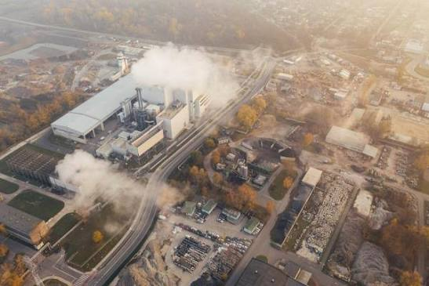
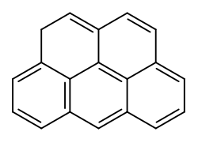
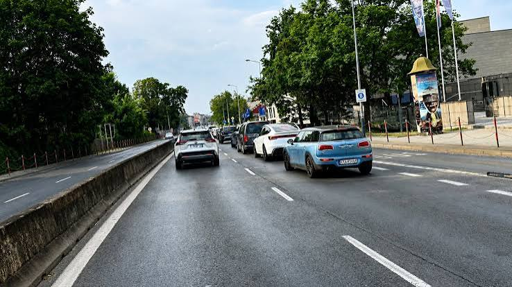

Pyły PM10 i PM2.5

Drobne cząsteczki pyłu, które trafiają do układu oddechowego i krwiobiegu. Zwiększają ryzyko chorób płuc oraz serca.
Źródła zanieczyszczeń:Domowe piece na węgiel i drewno, transport drogowy oraz przemysł.
Więcej o pyłach...Benzo(a)piren

Toksyczny i rakotwórczy związek powstający przy spalaniu paliw stałych w niskich temperaturach.
Źródła zanieczyszczeń:Głównie tzw. niska emisja, czyli starych typów kotły grzewcze.
Więcej o benzo(a)pirenie...Dwutlenek azotu (NO₂)

Gaz drażniący drogi oddechowe. Powstaje głównie w procesach spalania w wysokiej temperaturze.
Źródła zanieczyszczeń:Ruch samochodowy w miastach (silniki Diesla) oraz elektrownie.
Więcej o dwutlenku azotu...Zobacz też: dwutlenek siarki, tlenek węgla oraz ozon.